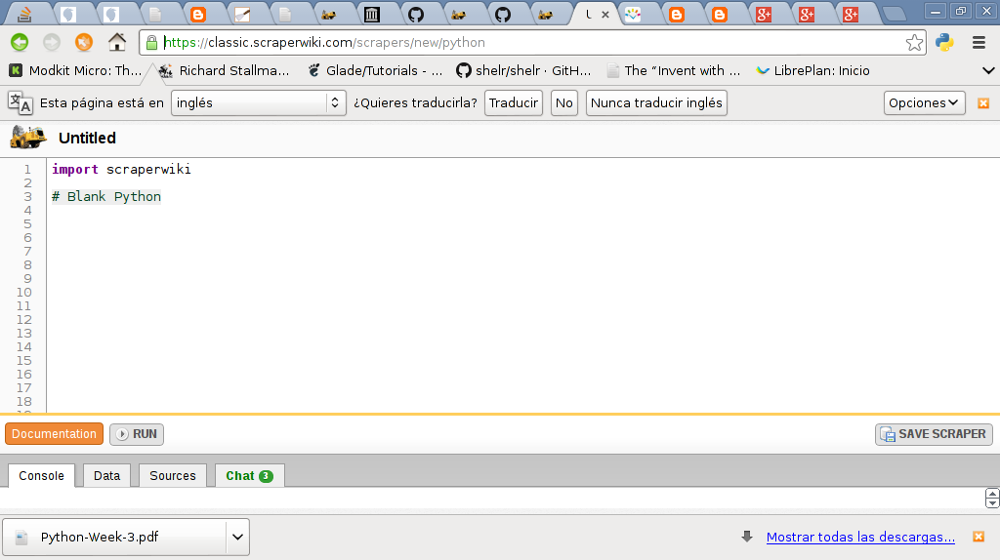
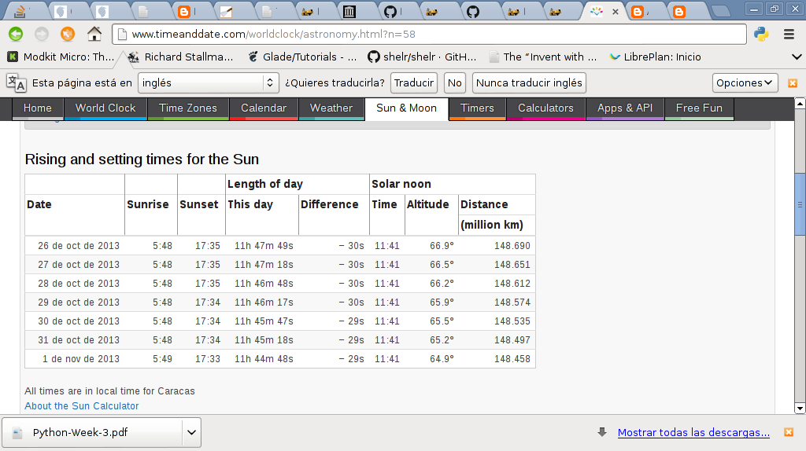
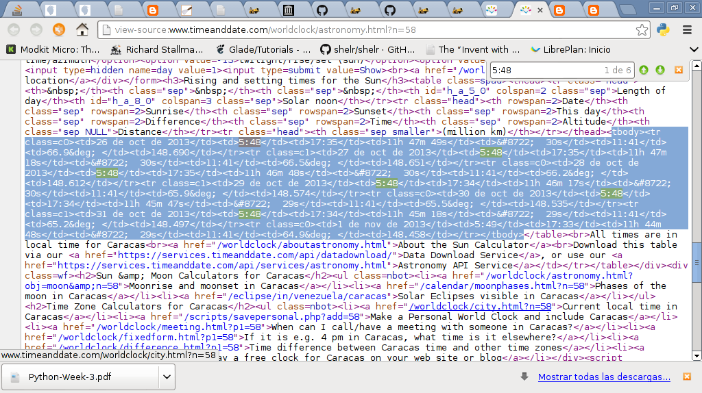

Extracción de datos con Scraperwiki y Python
Posted on lun 28 octubre 2013 in General • 2 min read
Continuando con los artículos sobre webscraping con Python, le toca el turno a Scraperwiki.
La documentación de Scraperwiki la pueden encontrar acá.
Aparte de una librería para Python, tiene un sitio interactivo donde puede usar ScraperWiki para Ruby, Php y Python, en el siguiente enlace pueden ver la interfaz web de ScraperWiki para Python.
Este artículo se basa en el tutorial oficial de ScraperWiki.
En la siguiente figura se muestra la página web de ScraperWiki para Python:

La siguiente imagen muestra la información de la salida y ocultamiento del Sol en Venezuela del sitio timeanddate:

Se muestra a continuación una imagen del código html de la página de la imagen anterior, sombreando la parte de dicho código que nos interesa:

Para instalar ScraperWiki se ejecuta el comando pip:
#pip install scraperwiki
El código para extraer la información se muestra a continuación:
#!/usr/bin/env python
#importar scraperwiki
import scraperwiki
#importar lxml.html
import lxml.html
#Url de la pagina timeanddate de la
#info de Venezuela.
url = "http://www.timeanddate.com/worldclock/astronomy.html?n=58"
#se crea la instancia de la clase scrape pasando el
#url del sitio a extraer la informacion.
html = scraperwiki.scrape(url)
#Se busca en el codigo html de la pagina
root = lxml.html.fromstring(html)
#Se crea una lista que almacenara los diccionarios conteniendo
#la informacion que se necesita
lista = []
#Se busca el tag html tbody y tr.
#Esto genera una lista con el contenido del tbody.Esto
#se recorre dicha lista
for tr in root.cssselect("tbody tr "):
#Se selecciona la informacion que aparece en
#el tag html td
tds = tr.cssselect("td")
#Se guarda la informacion en un diccionario
datos = {
'fecha': tds[0].text_content(),
'amanecer': tds[1].text_content(),
'atardecer': tds[2].text_content()
}
#Se agrega los datos a la lista
lista.append(datos)
#Se muestra la lista en pantalla
for i in lista:
print i
El resultado de la ejecución del script a continuación:
{'fecha': '26 Oct 2013', 'atardecer': '17:35', 'amanecer': '05:48'}
{'fecha': '27 Oct 2013', 'atardecer': '17:35', 'amanecer': '05:48'}
{'fecha': '28 Oct 2013', 'atardecer': '17:35', 'amanecer': '05:48'}
{'fecha': '29 Oct 2013', 'atardecer': '17:34', 'amanecer': '05:48'}
{'fecha': '30 Oct 2013', 'atardecer': '17:34', 'amanecer': '05:48'}
{'fecha': '31 Oct 2013', 'atardecer': '17:34', 'amanecer': '05:48'}
{'fecha': '1 Nov 2013', 'atardecer': '17:33', 'amanecer': '05:49'}
Puede revisar más tutoriales sobre ScraperWiki en el siguiente enlace.
¡Haz tu donativo! Si te gustó el artículo puedes realizar un donativo con Bitcoin (BTC) usando la billetera digital de tu preferencia a la siguiente dirección: 17MtNybhdkA9GV3UNS6BTwPcuhjXoPrSzV
O Escaneando el código QR desde la billetera: